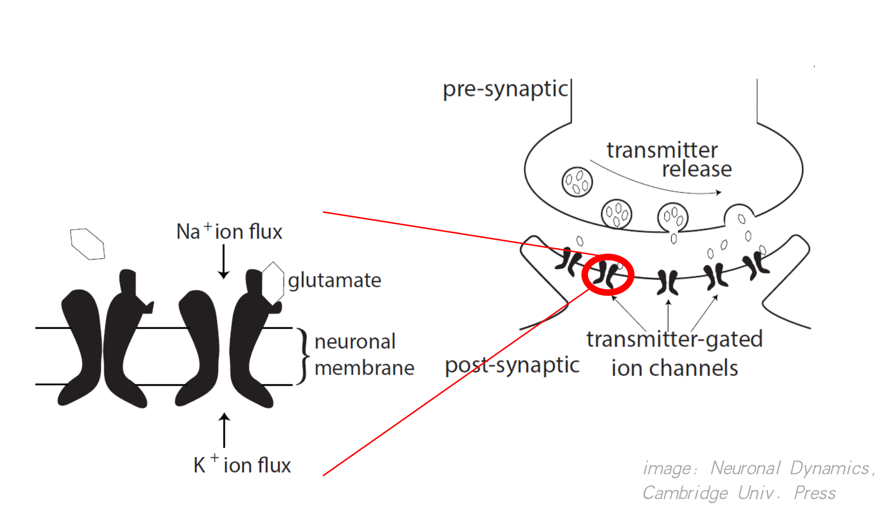

2.1 Synaptic Dynamics
When we model the firing of neurons, we need to connect them. Synapse is very important for the communication between neurons, and it is an essential component of the formation of the network. Therefore, we need to model the synapse.
In this section, we will introduce how to implement synaptic dynamics with BrainPy.
2.1.1 Chemical Synapses
AMPA Synapse
The picture shows the biological process of information transmission between neurons. Neurotransmitters released by presynaptic neurons bind with receptors on postsynaptic neurons, thus opening ion channels on the cell membrane of postsynaptic neurons and causing changes in membrane potential. Here we first introduce a typical synapse with AMPA receptor, and then introduce how to implement it with BrainPy.

AMPA receptor is an ionotropic receptor, which is an ion channel. When it is bound by neurotransmitters, it will immediately open the ion channel, causing the change of membrane potential of postsynaptic neurons.
A classical model is to use the Markov process to model ion channel switch. Here represents the probability of channel opening, represents the probability of ion channel closing, and and are the transition probability. Because neurotransmitters can open ion channels, the transfer probability from to is affected by the concentration of neurotransmitters. We denote the concentration of neurotransmitters as [T] and get the following Markov process.

We obtained the following formula when describing the process by a differential equation.
Where denotes the transition probability from state to state ; and represents the transition probability of the other direction.
Now let's see how to implement such a model with BrainPy. First of all, we need to define a class that inherits frombp.TwoEndConn, because synapses connect two neurons.
To define this class, we first use the__ init__Function to initialize the required parameters and variables. First, in a synapse, we need pre and post to specify the presynaptic neurons and postsynaptic neurons connected by the synapse, respectively. It should be noted that both pre and post are vectors, representing two groups of neurons. Therefore, we also need to specify the conn of the connection matrix between the two neuron groups. Here, we can get the connection matrix conn from conn_ mat.
Now that we know how to define a synaptic model in BrainPy, let's focus on how to implement an AMPA synapse. We notice that there is a concentration of neurotransmitter [T] in the formula. In order to simplify the calculation, [T] can be regarded as a constant, which is determined by T_duration controls how long it lasts. Therefore, our simplified implementation is that every time the presynaptic neuron emits, it will release neurotransmitters, which maintain T_duration, then is cleared. So we just need to judge if it's at T_duration, then [T] = T, otherwise [T] = 0. Then the judgment process needs to use a variable t_last_pre_spike to record the last firing time of presynaptic neurons.
After initialization, we copy the right side of the differential equation to the derivative function, and then update [T] and in the update function.
import brainpy as bp
bp.backend.set(backend='numpy', dt=0.1)
class AMPA(bp.TwoEndConn):
target_backend = 'general'
@staticmethod
def derivative(s, t, TT, alpha, beta):
ds = alpha * TT * (1 - s) - beta * s
return ds
def __init__(self, pre, post, conn, alpha=0.98,
beta=0.18, T=0.5, T_duration=0.5,
**kwargs):
# parameters
self.alpha = alpha
self.beta = beta
self.T = T
self.T_duration = T_duration
# connections
self.conn = conn(pre.size, post.size)
self.conn_mat = conn.requires('conn_mat')
self.size = bp.ops.shape(self.conn_mat)
# variable
self.s = bp.ops.zeros(self.size)
self.t_last_pre_spike = -1e7 * bp.ops.ones(self.size)
self.int_s = bp.odeint(f=self.derivative, method='exponential_euler')
super(AMPA, self).__init__(pre=pre, post=post, **kwargs)
def update(self, _t):
spike = bp.ops.unsqueeze(self.pre.spike, 1) * self.conn_mat
self.t_last_pre_spike = bp.ops.where(spike, _t, self.t_last_pre_spike)
TT = ((_t - self.t_last_pre_spike) < self.T_duration) * self.T
self.s = self.int_s(self.s, _t, TT, self.alpha, self.beta)
After the implementation, we can plot the graph of changing with time.
import brainmodels as bm
neu1 = bm.neurons.LIF(2, monitors=['V'])
neu2 = bm.neurons.LIF(3, monitors=['V'])
syn = AMPA(T_duration=3.,pre=neu1, post=neu2, conn=bp.connect.All2All(), monitors=['s'])
net = bp.Network(neu1, syn, neu2)
net.run(30., inputs=(neu1, 'input', 35.))
bp.visualize.line_plot(net.ts, syn.mon.s, ylabel='s', show=True)

As can be seen from the above figure, when the presynaptic neurons fire, the value of will first increase, and then decay.
Alpha、Exponential Synapses
Because many synaptic models have the same dynamic characteristics as AMPA synapses, sometimes we don't need to use models that specifically correspond to biological synapses. Therefore, some abstract synaptic models have been proposed. Here, we will introduce the implementation of four abstract models on BrainPy. These models are also available in the Brain-Models package.
(1) Differences of two exponentials
The first is Differences of two exponentials, the dynamic is given by,
While implementing with BrainPy, we use the following differential equation form,
Here we specify the logic of increment of in the Update function when the presynaptic neurons fire. The code is as follows:
class Two_exponentials(bp.TwoEndConn):
target_backend = 'general'
@staticmethod
def derivative(s, x, t, tau1, tau2):
dxdt = (-(tau1 + tau2) * x - s) / (tau1 * tau2)
dsdt = x
return dsdt, dxdt
def __init__(self, pre, post, conn, tau1=1.0, tau2=3.0, **kwargs):
# parameters
self.tau1 = tau1
self.tau2 = tau2
# connections
self.conn = conn(pre.size, post.size)
self.conn_mat = conn.requires('conn_mat')
self.size = bp.ops.shape(self.conn_mat)
# variables
self.s = bp.ops.zeros(self.size)
self.x = bp.ops.zeros(self.size)
self.integral = bp.odeint(f=self.derivative, method='rk4')
super(Two_exponentials, self).__init__(pre=pre, post=post, **kwargs)
def update(self, _t):
self.s, self.x = self.integral(self.s, self.x, _t, self.tau1, self.tau2)
self.x += bp.ops.unsqueeze(self.pre.spike, 1) * self.conn_mat
neu1 = bm.neurons.LIF(2, monitors=['V'])
neu2 = bm.neurons.LIF(3, monitors=['V'])
syn = Two_exponentials(tau1=2., pre=neu1, post=neu2, conn=bp.connect.All2All(), monitors=['s'])
net = bp.Network(neu1, syn, neu2)
net.run(30., inputs=(neu1, 'input', 35.))
bp.visualize.line_plot(net.ts, syn.mon.s, ylabel='s', show=True)

(2) Alpha synapse
Alpha synapse is similar to the above model, except here . Therefore, the formula is more simplified:
Code implementation is similar:
class Alpha(bp.TwoEndConn):
target_backend = 'general'
@staticmethod
def derivative(s, x, t, tau):
dxdt = (-2 * tau * x - s) / (tau ** 2)
dsdt = x
return dsdt, dxdt
def __init__(self, pre, post, conn, tau=3.0, **kwargs):
# parameters
self.tau = tau
# connections
self.conn = conn(pre.size, post.size)
self.conn_mat = conn.requires('conn_mat')
self.size = bp.ops.shape(self.conn_mat)
# variables
self.s = bp.ops.zeros(self.size)
self.x = bp.ops.zeros(self.size)
self.integral = bp.odeint(f=self.derivative, method='rk4')
super(Alpha, self).__init__(pre=pre, post=post, **kwargs)
def update(self, _t):
self.s, self.x = self.integral(self.s, self.x, _t, self.tau)
self.x += bp.ops.unsqueeze(self.pre.spike, 1) * self.conn_mat
neu1 = bm.neurons.LIF(2, monitors=['V'])
neu2 = bm.neurons.LIF(3, monitors=['V'])
syn = Alpha(pre=neu1, post=neu2, conn=bp.connect.All2All(), monitors=['s'])
net = bp.Network(neu1, syn, neu2)
net.run(30., inputs=(neu1, 'input', 35.))
bp.visualize.line_plot(net.ts, syn.mon.s, ylabel='s', show=True)

(3) Single exponential decay
Sometimes we can ignore the rising process in modeling, and only need to model the decay process. Therefore, the formula of single exponential decay model is more simplified:
The implementing code is given by:
class Exponential(bp.TwoEndConn):
target_backend = 'general'
@staticmethod
def derivative(s, t, tau):
ds = -s / tau
return ds
def __init__(self, pre, post, conn, tau=8.0, **kwargs):
# parameters
self.tau = tau
# connections
self.conn = conn(pre.size, post.size)
self.conn_mat = conn.requires('conn_mat')
self.size = bp.ops.shape(self.conn_mat)
# variables
self.s = bp.ops.zeros(self.size)
self.integral = bp.odeint(f=self.derivative, method='exponential_euler')
super(Exponential, self).__init__(pre=pre, post=post, **kwargs)
def update(self, _t):
self.s = self.integral(self.s, _t, self.tau)
self.s += bp.ops.unsqueeze(self.pre.spike, 1) * self.conn_mat
neu1 = bm.neurons.LIF(2, monitors=['V'])
neu2 = bm.neurons.LIF(3, monitors=['V'])
syn = Exponential(pre=neu1, post=neu2, conn=bp.connect.All2All(), monitors=['s'])
net = bp.Network(neu1, syn, neu2)
net.run(30., inputs=(neu1, 'input', 35.))
bp.visualize.line_plot(net.ts, syn.mon.s, ylabel='s', show=True)

（4）Voltage jump
Sometimes even the decay process can be ignored, so there is a voltage jump model, which is given by:
In the implementation, even the differential equation is not needed, just update the postsynaptic membrane potential in the update function. However, because it will directly modify the membrane potential, when the postsynaptic neurons have a refractory period, it should only update the membrane potential while not in the refractory period.
The code is as follows:
class Voltage_jump(bp.TwoEndConn):
target_backend = 'general'
def __init__(self, pre, post, conn, post_refractory=False, **kwargs):
# parameters
self.post_refractory = post_refractory
# connections
self.conn = conn(pre.size, post.size)
self.conn_mat = conn.requires('conn_mat')
self.size = bp.ops.shape(self.conn_mat)
# variables
self.s = bp.ops.zeros(self.size)
super(Voltage_jump, self).__init__(pre=pre, post=post, **kwargs)
def update(self, _t):
self.s = bp.ops.unsqueeze(self.pre.spike, 1) * self.conn_mat
if self.post_refractory:
refra_map = (1. - bp.ops.unsqueeze(self.post.refractory, 0)) * self.conn_mat
self.post.V += bp.ops.sum(self.s * refra_map, axis=0)
else:
self.post.V += bp.ops.sum(self.s, axis=0)
neu1 = bm.neurons.LIF(2, monitors=['V'])
neu2 = bm.neurons.LIF(3, monitors=['V'])
syn = Voltage_jump(pre=neu1, post=neu2, conn=bp.connect.All2All(), monitors=['s'])
net = bp.Network(neu1, syn, neu2)
net.run(30., inputs=(neu1, 'input', 35.))
bp.visualize.line_plot(net.ts, syn.mon.s, ylabel='s', show=True)

Current-based and Conductance-based synapse
Previously, we have modeled the gating variable . There are two different methods to model the relationships of and (the input current of postsynaptic neurons): current-based and conductance-based. The main difference between them is whether the synaptic current is influenced by the membrane potential of postsynaptic neurons.
The formula of the current-based model is as follow:
While coding, we usually multiply by a weight . We can implement excitatory and inhibitory synapses by adjusting the positive and negative values of the weight .
Here implement the delay of synapses by applying a delay time to I_syn variable with the register_constant_delay function provided by BrainPy.
def __init__(self, pre, post, conn, **kwargs):
# ...
self.s = bp.ops.zeros(self.size)
self.w = bp.ops.ones(self.size) * .2
self.I_syn = self.register_constant_delay('I_syn', size=self.size, delay_time=delay)
def update(self, _t):
for i in nb.prange(self.size):
# ...
self.I_syn.push(i, self.w[i] * self.s[i])
self.post.input[post_id] += self.I_syn.pull(i)
In the conductance-based model, the conductance is . Therefore, according to Ohm's law, the formula is given by:
Here is a reverse potential, which can determine whether the direction of is inhibition or excitation. For example, when the resting potential is about -65, subtracting a lower , such as -75, will become positive, thus will change the direction of the current in the formula and produce the suppression current. The value of excitatory synapses is relatively high, such as 0.
In terms of implementation, you can apply a synaptic delay to the variable g.
def __init__(self, pre, post, conn, g_max, E, **kwargs):
self.g_max = g_max
self.E = E
# ...
self.s = bp.ops.zeros(self.size)
self.g = self.register_constant_delay('g', size=self.size, delay_time=delay)
def update(self, _t):
for i in nb.prange(self.size):
# ...
self.g.push(i, self.g_max * self.s[i])
self.post.input[post_id] -= self.g.pull(i) * (self.post.V[post_id] - self.E)
2.1.2 Electrical Synapses
In addition to the chemical synapses described earlier, electrical synapses are also common in our neural system.

As shown in the figure above, two neurons are connected by junction channels and can conduct electricity directly. Therefore, it can be seen that two neurons are connected by a constant resistance, as shown in the figure below.

According to Ohm's law, we can get the following equation,
Here the conductance is expressed as , which represents the weight of the connection.
While implementing with BrainPy, you only need to specify the equation in the update function.
class Gap_junction(bp.TwoEndConn):
target_backend = 'general'
def __init__(self, pre, post, conn, delay=0., k_spikelet=0.1, post_refractory=False, **kwargs):
self.delay = delay
self.k_spikelet = k_spikelet
self.post_refractory = post_refractory
# connections
self.conn = conn(pre.size, post.size)
self.conn_mat = conn.requires('conn_mat')
self.size = bp.ops.shape(self.conn_mat)
# variables
self.w = bp.ops.ones(self.size)
self.spikelet = self.register_constant_delay('spikelet', size=self.size, delay_time=delay)
super(Gap_junction, self).__init__(pre=pre, post=post, **kwargs)
def update(self, _t):
v_post = bp.ops.vstack((self.post.V,) * self.size[0])
v_pre = bp.ops.vstack((self.pre.V,) * self.size[1]).T
I_syn = self.w * (v_pre - v_post) * self.conn_mat
self.post.input += bp.ops.sum(I_syn, axis=0)
self.spikelet.push(self.w * self.k_spikelet * bp.ops.unsqueeze(self.pre.spike, 1) * self.conn_mat)
if self.post_refractory:
self.post.V += bp.ops.sum(self.spikelet.pull(), axis=0) * (1. - self.post.refractory)
else:
self.post.V += bp.ops.sum(self.spikelet.pull(), axis=0)
import matplotlib.pyplot as plt
import numpy as np
neu0 = bm.neurons.LIF(2, monitors=['V'], t_refractory=0)
neu0.V = np.ones(neu0.V.shape) * -10.
neu1 = bm.neurons.LIF(3, monitors=['V'], t_refractory=0)
neu1.V = np.ones(neu1.V.shape) * -10.
syn = Gap_junction(pre=neu0, post=neu1, conn=bp.connect.All2All(),
k_spikelet=5.)
syn.w = np.ones(syn.w.shape) * .5
net = bp.Network(neu0, neu1, syn)
net.run(100., inputs=(neu0, 'input', 30.))
fig, gs = bp.visualize.get_figure(row_num=2, col_num=1, )
fig.add_subplot(gs[1, 0])
plt.plot(net.ts, neu0.mon.V[:, 0], label='V0')
plt.legend()
fig.add_subplot(gs[0, 0])
plt.plot(net.ts, neu1.mon.V[:, 0], label='V1')
plt.legend()
plt.show()